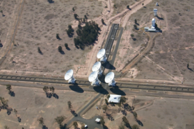

A radio interferometer is an array of radio antennas or ‘elements’ that are used in astronomical observations simultaneously to simulate a discretely-sampled single telescope of very large aperture. To put it another way, a radio interferometer can be thought of as a single telescope with a very large and incompletely-filled aperture, of maximum size equivalent to the maximum spacing, or baseline, between any two of its component elements. This large ‘synthesized’ aperture is only sampled at the locations at which an element exists, and this is aided by the rotation of the Earth which effectively moves the elements within it, hence increasing the sampling. This is known as ‘Earth rotation aperture synthesis’. The size of the synthesized aperture dictates the resolution or ‘beam size’ of the array; the larger the aperture, the smaller the resolution.

Credit: Stewart Duff
Radio interferometers operate at wavelengths that fall within the ‘radio window’ and are typically centred in bands around 20-, 13-, 6-, 3.5-, 2-, 1.3 and 0.7-cm. For archaic reasons, in radio astronomy nomenclature these are known respectively as L-, S-, C-, X-, U-, K- and Q-band. The centimetre-wavelength bands (20-, 13-, 6-, 3.5-, 2-cm) are primarily used for continuum (broadband) observing (e.g. thermal continuum from HII regions or synchrotron continuum from an AGN), whilst those at the millimetre bands (1.3-, 0.7-cm) are commonly used for spectroscopy (narrowband observing, e.g. molecular lines in evolved stars or star-forming regions). This is not exclusively the case though, with common cm-wavelength spectroscopy being that of the 21-cm HI spin-flip transition and various radio recombination lines, whilst mm-continuum is found to trace the cool, thermal dust emission in star-forming regions.
Some of the most commonly-used radio interferometers are:
- the Very Large Array (VLA) in Socorro, New Mexico, USA;
- the Multi-Element Radio Linked Interferometer Network (MERLIN), which has antennas spread across England;
- the Australia Telescope Compact Array (ATCA) in Narrabri, NSW, Australia.
Very Long Baseline Interferometry (VLBI) also makes use of radio interferometric techniques.